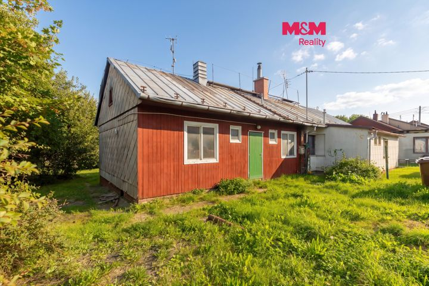
Price reduced
Prodej domu/vily, 55 m²
Prodej domu/vily, 55 m²
2,790,000 CZK → 2,500,000 CZK -10.39%
Original advert ↗Daily market update · 2026-11-11 · Ostrava + 15 km
Data limitation: Prices are advertised, not completed transaction prices. Disappeared adverts are NOT proof of sold or rented status. Search radius may be unverified for individual locations. "New" means first observed since a comparable complete Sreality scan, not independently verified as newly published. "New to tracker" may reflect expanded or partial portal coverage. Older Sreality IDs and known cross-lists are excluded. Additional monthly rental charges are not reliably supplied in these search cards.

Prodej domu/vily, 55 m²
2,790,000 CZK → 2,500,000 CZK -10.39%
Original advert ↗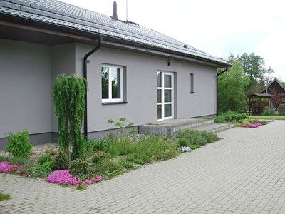
Václavovice, Ostrava-město
12,880,000 CZK → 12,850,000 CZK -0.23%
Original advert ↗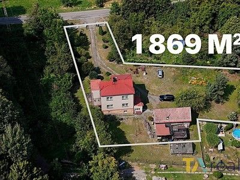
Petřvald, Karviná
4,249,000 CZK → Not stated
Original advert ↗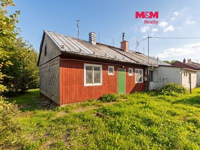
Slezská Ostrava, Ostrava-město
2,790,000 CZK → 2,500,000 CZK -10.39%
Original advert ↗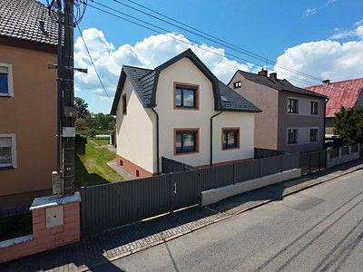
Kravaře, Opava
Not stated → 5,899,000 CZK
Original advert ↗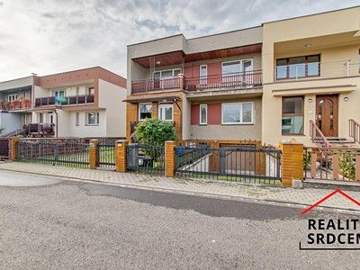
Sviadnov, Frýdek-Místek
Not stated → 6,900,000 CZK
Original advert ↗Pazderna, Frýdek-Místek
Not stated → 5,400,000 CZK
Original advert ↗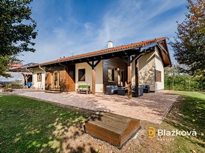
Vřesina, Opava
13,500,000 CZK → 12,500,000 CZK -7.41%
Original advert ↗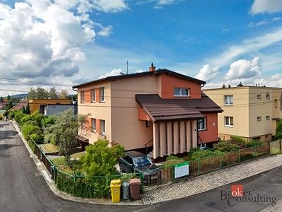
Místek, Frýdek-Místek
9,900,000 CZK → 8,500,000 CZK -14.14%
Original advert ↗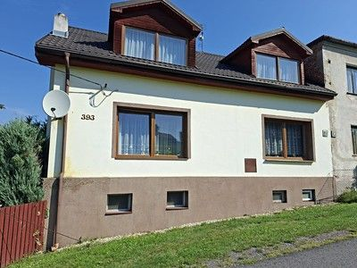
Skřečoň, Karviná
6,250,000 CZK → 5,990,000 CZK -4.16%
Original advert ↗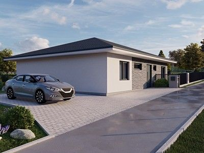
Rychvald, Karviná
8,850,000 CZK → Not stated
Original advert ↗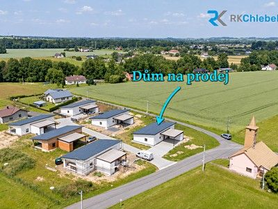
Horní Domaslavice, Frýdek-Místek
Not stated → 7,800,000 CZK
Original advert ↗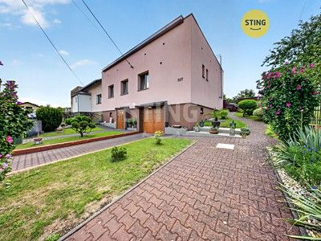
Polanka nad Odrou, Ostrava-město
8,490,000 CZK → Not stated
Original advert ↗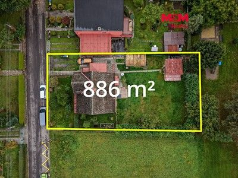
Horní Suchá, Karviná
4,650,000 CZK → Not stated
Original advert ↗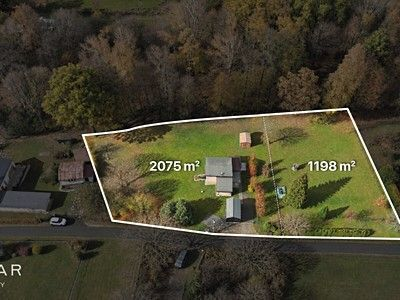
Petřvald, Karviná
Not stated → 4,199,000 CZK
Original advert ↗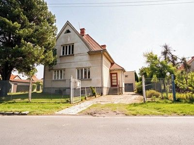
Petřvald, Nový Jičín
5,290,000 CZK → 5,190,000 CZK -1.89%
Original advert ↗
Zábřeh, Ostrava-město
13,230,000 CZK → 13,230,000 CZK
Original advert ↗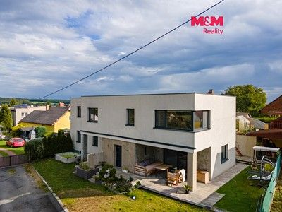
Darkovice, Opava
7,999,000 CZK → 6,999,000 CZK -12.5%
Original advert ↗Darkovice, Opava
7,999,000 CZK → 6,999,000 CZK
Original advert ↗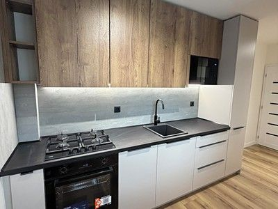
Muglinov, Ostrava-město
5,190,000 CZK → Not stated
Original advert ↗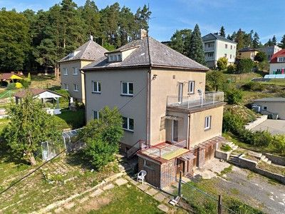
Vřesina, Ostrava-město
6,400,000 CZK → Not stated
Original advert ↗